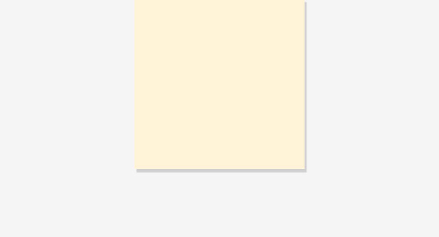
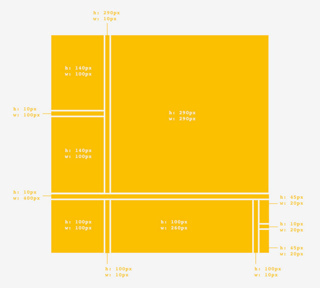
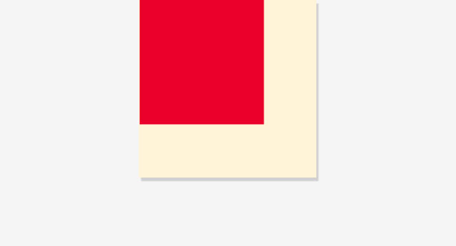
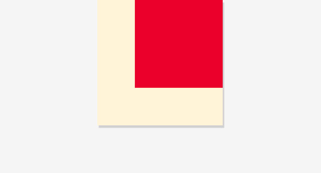
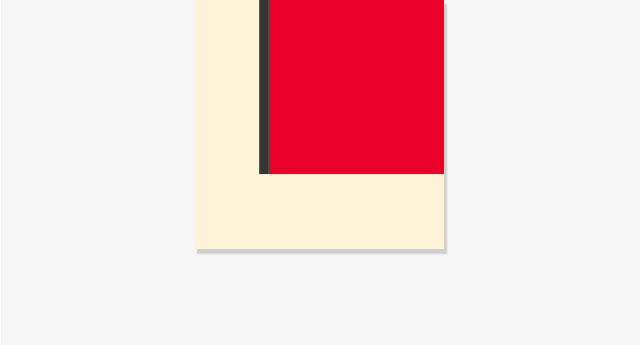
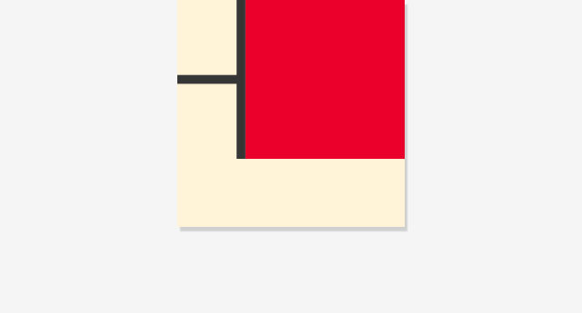
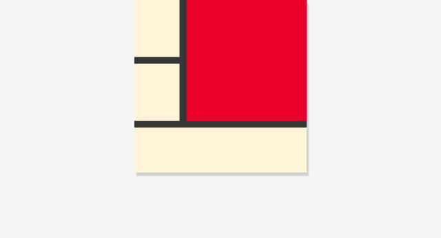
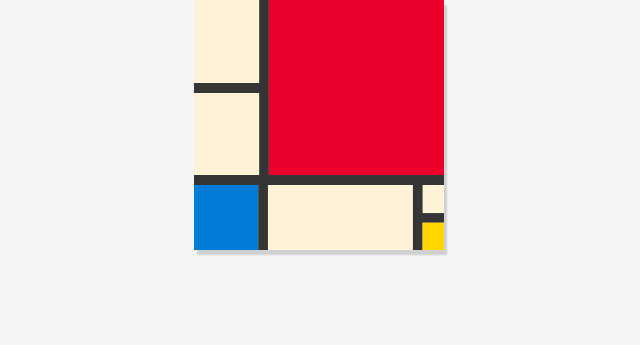
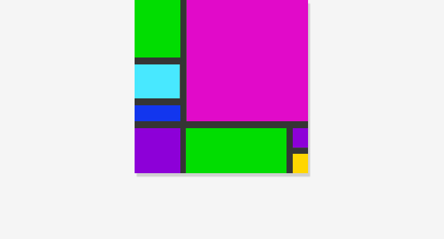

Paint makes a mess. Code is so much cleaner. Use this project to recreate a classic Modern artwork, Piet Mondrian’s Composition II in Red, Blue, and Yellow in your browser using basic web building blocks.
A great project for: Modern art buffs, aspiring art forgers and anyone that is interested in drawing with nothing but code.
If you’re new to Coder and unsure how to start you might want to take a quick step back. Check out these other Coder Projects for more help getting started.
This project will help you get started with Coder for Raspberry Pi. From plugging in your Pi to creating your first app.

A good introduction to Coder as well as Basic HTML and CSS. If you’ve never written code before or if you don’t know the difference between HTML and CSS this might be a better place to start.
As always, let’s start by making a new App in Coder. You call it whatever you want. We’ve called ours “Modern Mondrian.”

Before we do anything else lets give our selves a nice big wall to hang our painting.
Our CSS code looks like this:

Let’s make a big box. This will be the canvas for our code painting and the container we will put everything else we will make into. To make our painting we will be using two new concepts: #id and <div>.
The new CSS code we added looks like this:
Now let’s add that style to an element on our HTML page.
Our HTML looks like this:
Divs are tags that help divide and segment a page. You can think of them like boxes that can be styled and positioned using CSS. You can also put stuff inside them, such as text, pictures, and even other divs. They are the basic building blocks of any website and a fundamental part of this project. So get ready to make a lot of them.
Now that we have our basic structure, it’s time to define the structure of our painting. It’s very helpful to plan out and divide the work into sections before we begin coding. Positioning and dividing up boxes with DIVs and CSS is much easier if you’ve already done the math.
We will be thinking about the works as rows, columns, and boxes. Each one of these will have their own CSS #id and one or more corresponding HTML <div>s. Some of them will be visible and colored. Others will be invisible but serve to hold the boxes in proper position and alignment.
Here’s an illustration of how how these divisions will work and what the measurements for our finished piece will be:

We’ll start by making our top row the one with the big box on the right and two smaller boxes on the left.
Our CSS looks like this:
Our HTML looks like this:
Alright, now let’s start adding some of those boxes we talked about. We’ll start with the biggest, most colorful one of them all: the big red box in the upper right.
Our HTML looks like this:
The CSS addition looks like this:

Now let’s give that box some color! Now you’re probably thinking we could just add a background-color attribute to the #bigbox id we already created, and you would be correct! That would get the job done pretty well. But remember we want to give multiple boxes the same color later in the project. For that a CSS .class will be a better choice.
Classes are similar to the #id styles we’ve been working with except the same class can be used to style multiple elements, including DIVs that already have #ids in our layout. That will make more sense in just a bit. Let’s make that .class first.
If you’d prefer more control and variation in color you can use a hex value.
To apply the .red class to our #bigbox DIV, simply add the text class="red" to its tag in HTML.

You probably noticed the big red box is on the wrong side. These things happen. Web elements will default to the upper left if they aren’t assigned any other positioning. Let’s move this box to the place its supposed to go.
There are many different ways of positioning an element the but method we will be using is called float. It makes things move (or float) either right or left until they bump into something. Normally a DIV will position itself underneath the previous element, but when DIVs are "floated", they can align side-by-side until there is no more space and they are forced to wrap.
Here's the relevant CSS:
And here's what changed in the HTML:
Note that an element can only have a single #id, but it can have more than one .class.
Floated elements will stack up against each other. This means if we give all the boxes in our rows the .right .class they will float up next to each other and form a nice horizontal row. That’s what we want for the next step.

Now let’s add one of those black bars. We’ll add them the same way we added the big red box. Make a new #id for the top divider and assign a color and position class to it in the HTML. our divider is 10px wide and 290px tall.
Our CSS code looks like this:
And our HTML:

Now let’s make a column, called #topleftcolumn. We will be putting three boxes in it, two with the .mediumbox class, and a horizontal #divider2 in between.
#topleftcolumn won't be visible, but it helps position and stack those three boxes vertically within that last bit of the row.
Our CSS additions look like:
Since the two boxes are the exact same size we can use one .class for both of them instead of using a unique #id.

This is just another black divider, but it's not inside #toprow.
Here's the HTML markup. Can you figure out the CSS?

Now you’re ready to do the last row your self. You have all the pieces and knowledge at your disposal. The process is the same as the top row we just completed just with different sizes and colors. Keep an eye on those little boxes at the right. They’ll need their own column.

You’re done! Doesn’t it look great? Actually, maybe it doesn’t look that great. Maybe you want to make it wilder, add more colors or change the ones that are already there. Good thing that’s easy to do. Go back into the CSS tab and start changing the values of the color classes we made. If you’re feeling really crazy, maybe change some box sizes or add new ones. See if you can make it a whole new painting.
Congrats on the finished piece. If you’re interested in taking your new found Modern art skills to the next level try some of the exercises below.
So far we’ve been dealing with pixel dimensions on everything. What happens if we change height and width to percents? Can you create a Mondrian-style image that fills the entire browser and scales to any dimension the window takes?
Still digging on Mondrian? Why not try to recreate one of his most famous paintings, Broadway Boogie Woogie right next to the painting we just made? Get ready. It’s got a lot of squares.
Like drawing with code? There’s more than just CSS/HTML and static blocks. Try these other coder projects to make more cool things and learn more useful stuff.
Do you have a favorite recipe that you want to share with the world? With this project we will use code to write a recipe that looks as good as it tastes.
Open Project
Got a story to tell? Have some great text and images you want to put together? This project will give you the pieces to turn them into a webcomic while teaching you some new skills along the way.
Open Project